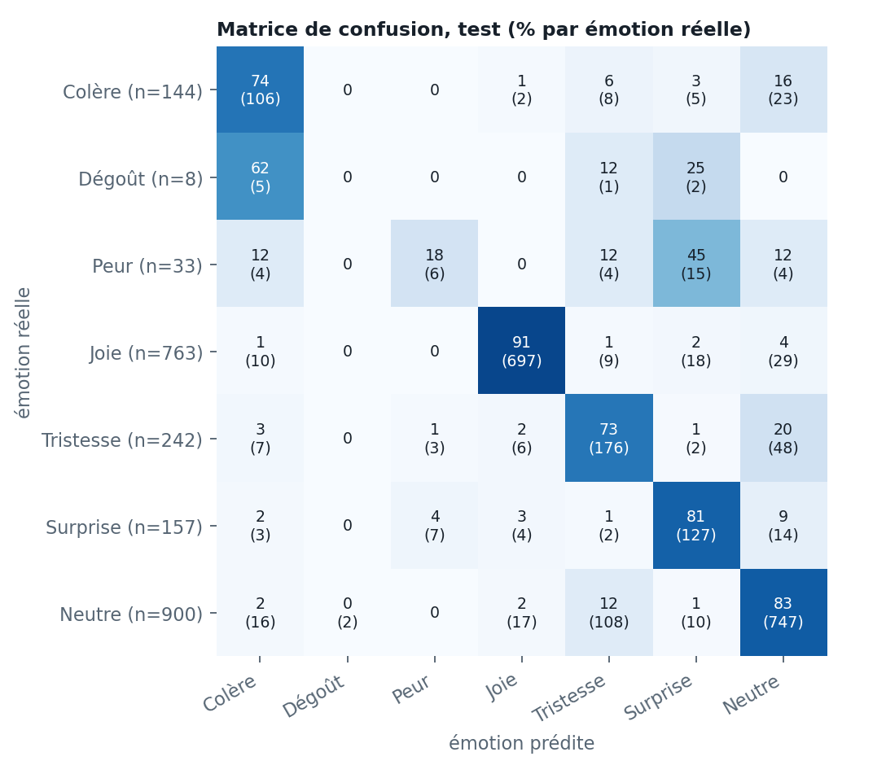
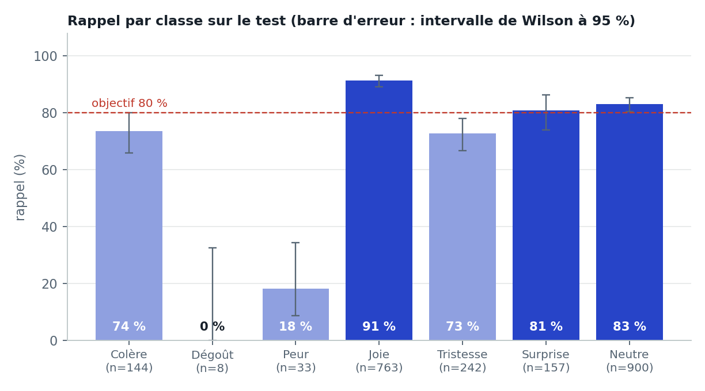
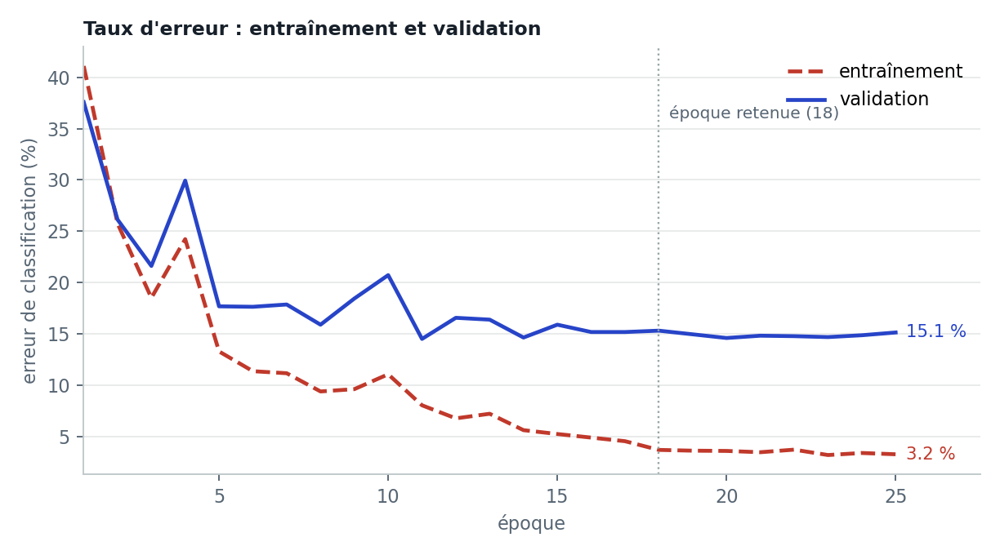

Démonstration
11 extraits de vidéos libres de droits joués par des comédiens. Pour chaque visage : l'émotion reconnue, la confiance et les probabilités des 7 émotions. Détection et modèle tournent à environ 54 images par seconde sur GPU et 49 sur le seul processeur d'un ordinateur portable, au-delà des 25 images par seconde d'une vidéo.
Ces extraits illustrent le fonctionnement ; ils ne mesurent pas la performance. Pour être transparente, j'ai testé 41 extraits dont l'émotion était fixée d'avance par leur titre : l'émotion jouée est reconnue dans 17 cas.
| Émotion jouée | Extraits | Reconnue sur au moins 60 % des images |
|---|---|---|
| Joie | 4 | 4 / 4 |
| Neutre | 7 | 7 / 7 |
| Tristesse | 10 | 4 / 10 |
| Surprise | 10 | 2 / 10 |
| Colère | 5 | 0 / 5 |
| Peur | 3 | 0 / 3 |
| Dégoût | 2 | 0 / 2 |
| Total | 41 | 17 / 41 |
Vidéos : Mixkit, licence « Stock Video Free » (usage et modification autorisés). Extraits n° 4756, 25577, 46704, 45503, 4535, 4720, 33260, 46376, 2749, 8739, 33750.
Le problème
Reconnaître l'émotion d'un visage (colère, dégoût, peur, joie, tristesse, surprise, neutre) assez vite pour suivre une vidéo. Le jeu de données de référence, FER2013 (35 887 petites photos), a trois défauts connus : des étiquettes bruitées, des doublons, et des émotions très déséquilibrées. Un score mesuré sans corriger ces défauts paraît bon mais ne veut rien dire. Mon objectif : d'abord une évaluation fiable, ensuite la performance.
Ma démarche
- DétectionYuNet (OpenCV) trouve chaque visage, sur l'image réduite de moitié
- PréparationVisage recadré, agrandi à 112×112, normalisé
- ModèleResNet-18 pré-entraîné, 11,2 millions de paramètres
- LissageMoyenne sur quelques images pour éviter le scintillement
- AffichageÉmotion, confiance et probabilités des 7 classes
- Nettoyer avant d'entraîner. 7 976 images retirées sur 35 887 (copies et quasi-copies, images inutilisables, dessins), dont 1 916 présentes à la fois dans l'entraînement et dans le test. Chaque suppression est consignée dans un journal.
- De meilleures étiquettes. Les étiquettes FER+ (dix annotateurs par image) remplacent celles d'origine : sur 5 121 images de « peur » d'origine, seules 813 sont confirmées par la majorité. Le modèle apprend la répartition des votes, pas une classe unique.
- Apprentissage par transfert. ResNet-18 pré-entraîné sur ImageNet, nouvelle tête, dégel progressif, deux taux d'apprentissage, AdamW, précision mixte : 6,5 minutes d'entraînement sur le GPU d'un portable.
- Classes rares. Variantes d'images pour le dégoût et la peur (entraînement seulement), perte focale et poids de classes.
- Un protocole strict. Le modèle, ses réglages et son seuil sont choisis sur la validation ; le test sert une seule fois, à mesurer le modèle final. Ma première version, un CNN entraîné de zéro, était évaluée sur un test contaminé : je l'ai corrigée avant de publier.
Résultats
- Exactitude
- 82,7 %
- Exactitude équilibrée
- 60,0 %
- F1 moyen (7 émotions)
- 0,592
- Kappa de Cohen
- 0,757
Mesuré sur les 2 247 images du test nettoyé, jamais utilisées pour choisir le modèle. Intervalle de confiance à 95 % : 81,0 à 84,3 % d'exactitude. Joie et neutre forment les trois quarts du test : l'exactitude équilibrée, moyenne des 7 rappels, donne une image plus juste des émotions rares. Pour situer : les meilleurs résultats publiés sur FER+ tournent autour de 89 à 90 %, avec un découpage différent, donc non directement comparable.
| Émotion | Rappel [IC 95 %] | Précision | F1 | Images de test |
|---|---|---|---|---|
| Joie | 91 % [89 ; 93] | 96 % | 0,94 | 763 |
| Neutre | 83 % [80 ; 85] | 86 % | 0,85 | 900 |
| Surprise | 81 % [74 ; 86] | 71 % | 0,76 | 157 |
| Colère | 74 % [66 ; 80] | 70 % | 0,72 | 144 |
| Tristesse | 73 % [67 ; 78] | 57 % | 0,64 | 242 |
| Peur | 18 % [9 ; 34] | 38 % | 0,24 | 33 |
| Dégoût | 0 % [0 ; 32] | 0 % | 0,00 | 8 |


Choix validés par expérience
Chaque choix a été comparé à une alternative, sur la validation uniquement, avant de lire le test.
| Configuration | Exactitude (validation) | Écart entraînement − validation | Décision |
|---|---|---|---|
| ResNet-18 pré-entraîné, étiquettes douces | 84,7 % | 11,6 points | Retenu |
| Même modèle, étiquettes dures | 84,2 % | 15,4 points | Mémorise davantage |
| ResNet-18 sans pré-entraînement | 80,7 % | 10,2 points | 4 points de moins |
| Régularisation forte, couches gelées | 79,1 % | 13,6 points | Écarté |

Limites
Peur et dégoût mal reconnus. Peur : 6 visages sur 33 (souvent pris pour de la surprise). Dégoût : 0 sur 8. L'entraînement ne contient que 349 et 108 photos distinctes de ces émotions. Le modèle est fiable sur la joie, le neutre, la surprise et la colère, pas sur ces deux-là.
Écart entre photos et vidéo. Entraîné sur de petites photos du web, il reconnaît l'émotion jouée dans 17 extraits vidéo sur 41. Il n'a pas été testé avec une caméra en conditions réelles.
Surapprentissage. 96,3 % d'exactitude à l'entraînement contre 84,7 % en validation, malgré la régularisation.
Confiances trop basses. La confiance affichée vaut 57 % en moyenne alors que le modèle a raison 84 % du temps (erreur de calibration 0,28), un effet des étiquettes douces : il faudrait recalibrer avant de montrer ces pourcentages à un utilisateur.
Peu d'exemples rares au test. 33 images de peur et 8 de dégoût : leurs intervalles de confiance sont larges.
Pistes : ajouter des images réelles des émotions rares (AffectNet, RAF-DB), entraîner à plus haute résolution avec des variations proches d'une caméra (flou, lumière), recalibrer les probabilités (mise à l'échelle par température) et afficher « incertain » sous un seuil de confiance.